Gallery
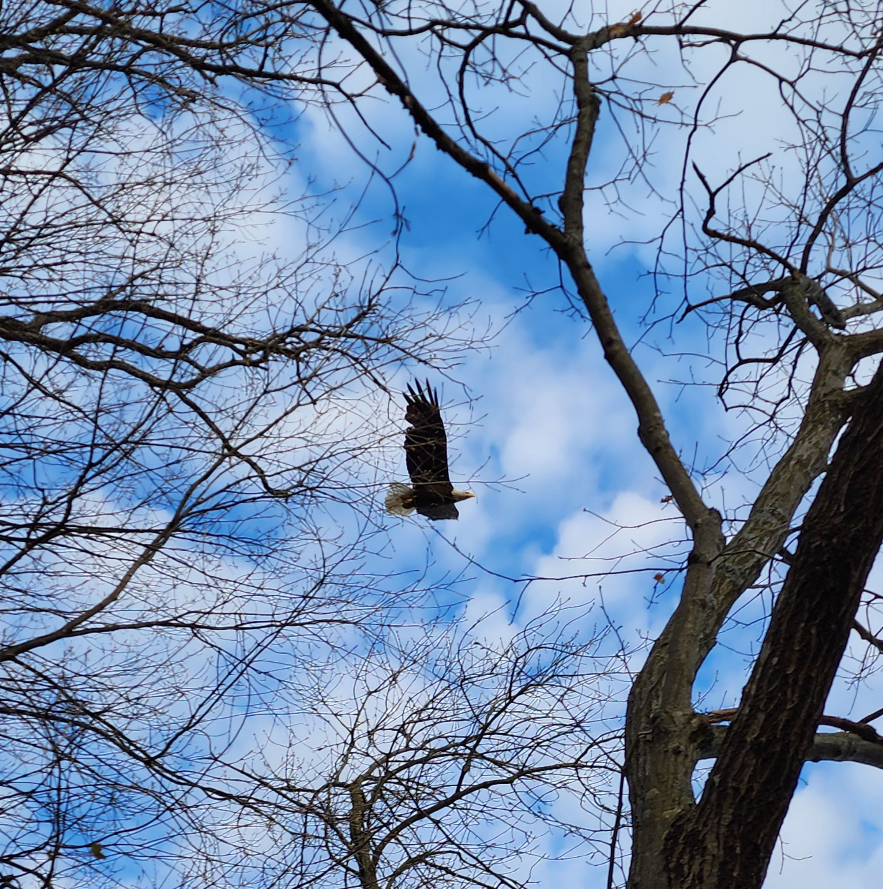
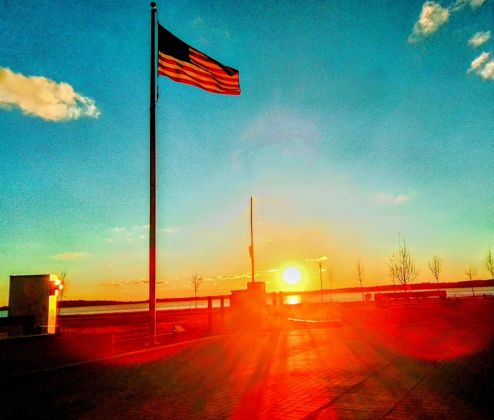
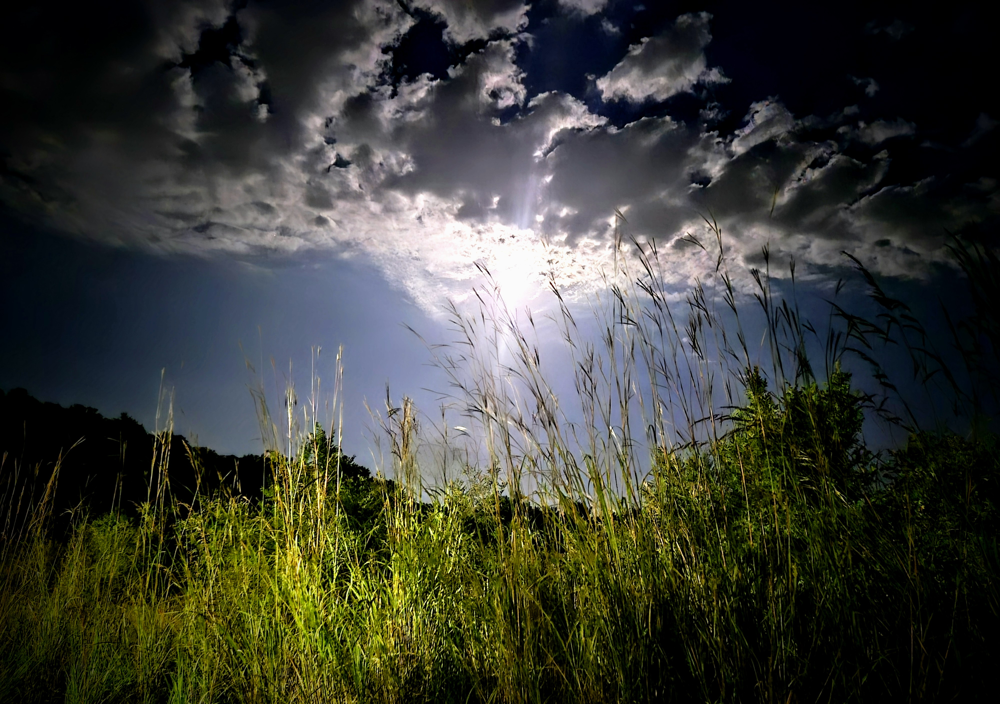
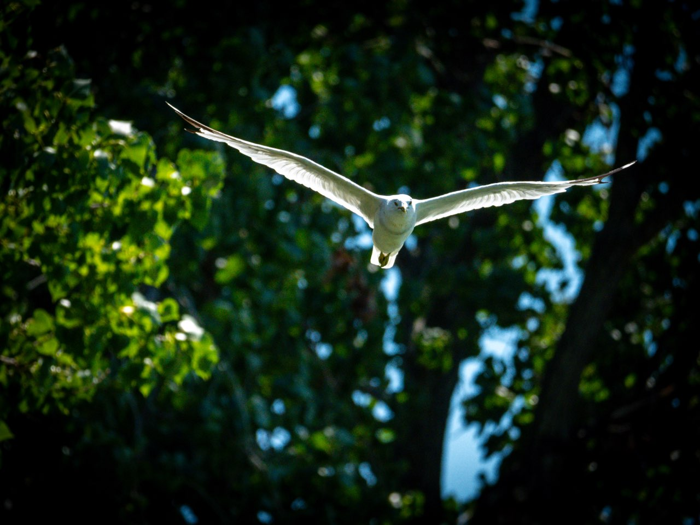
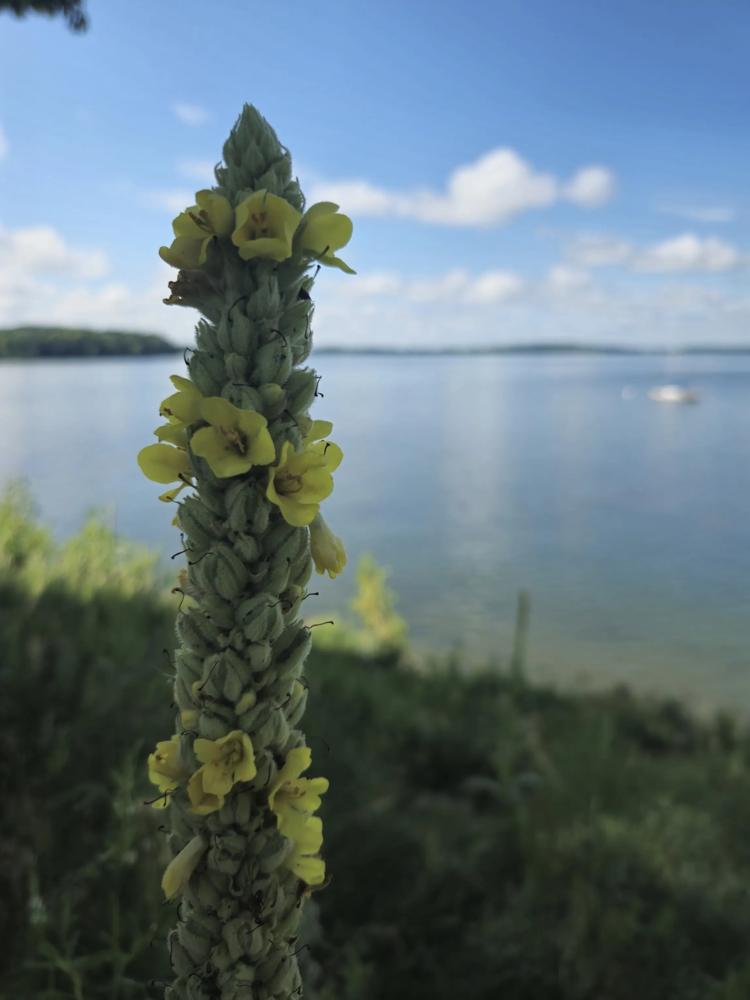
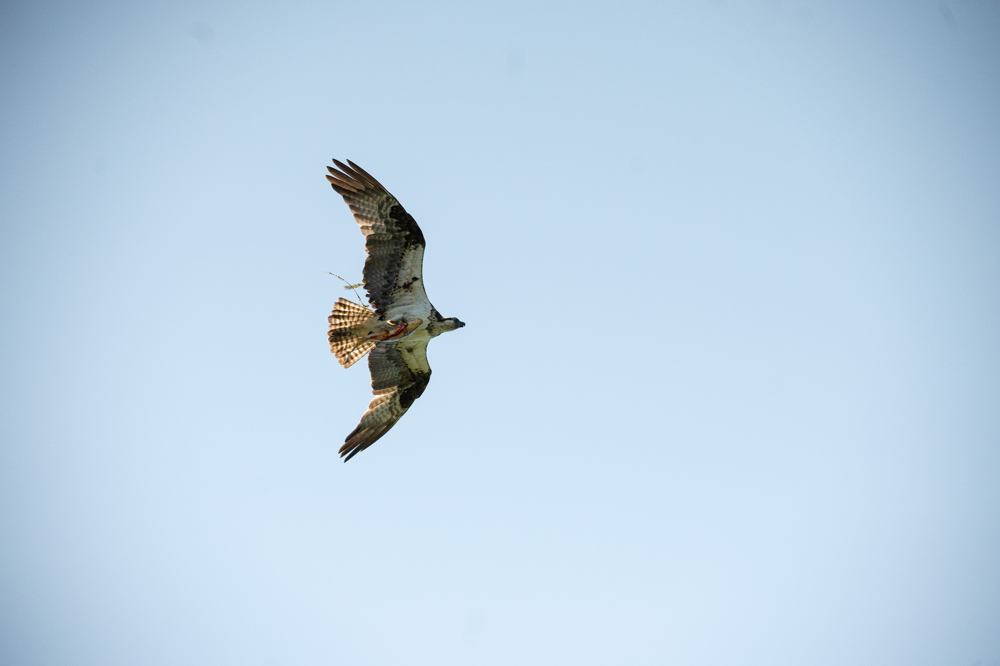
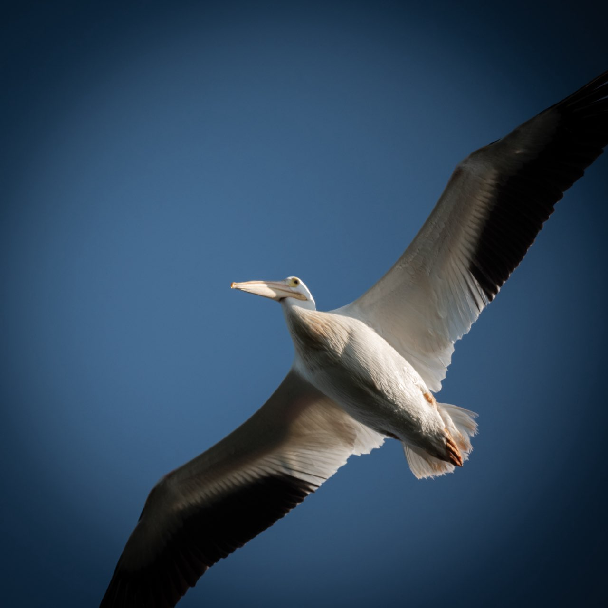
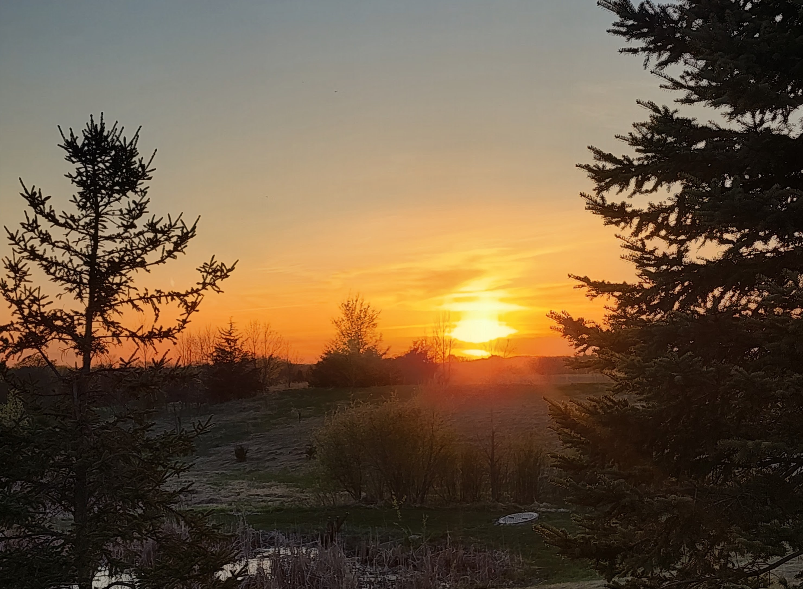
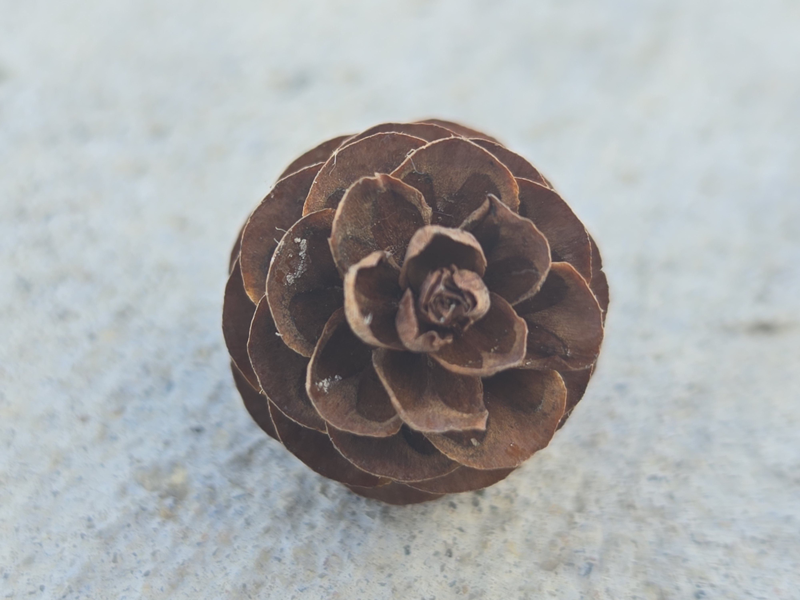
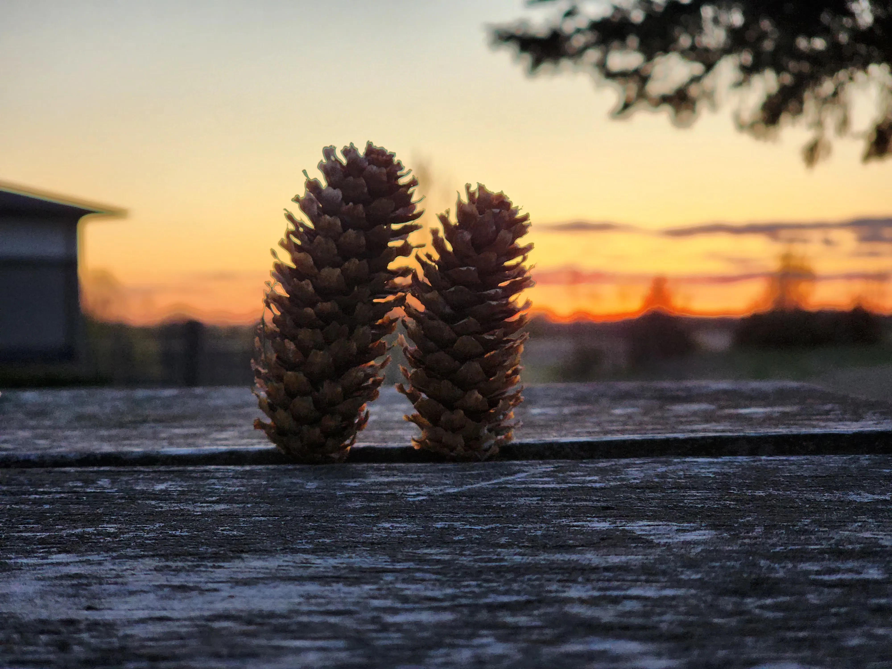
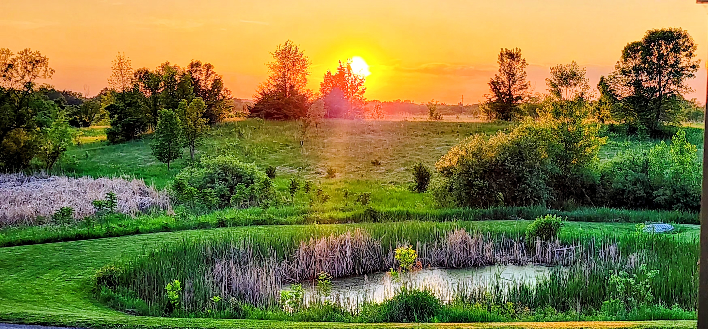

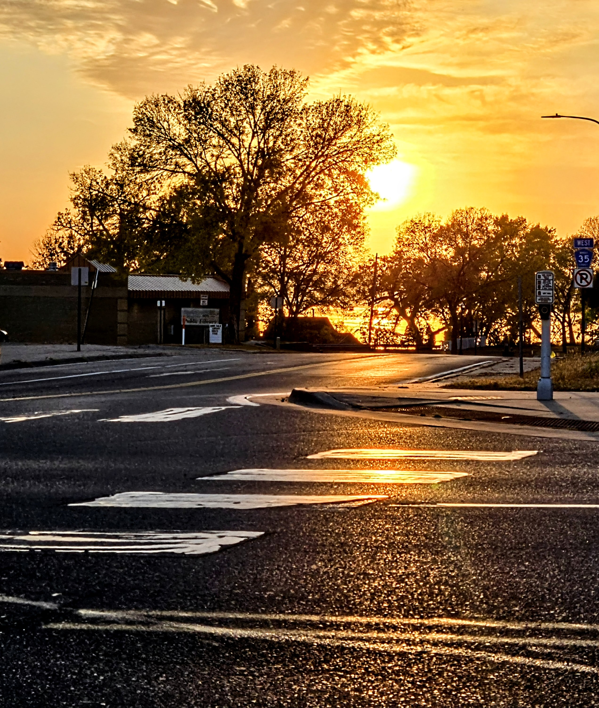
By Steve Terrell | Capturing Light, Preserving Moments












I'm Steve Terrell, and I'm deeply passionate about photography and what it does for the soul. Finding beauty in the most desolate of places has been a coping mechanism I've utilized for a good chunk of my life. It helps keep me grounded.
Through my lens, I seek to reveal the extraordinary hidden within the ordinary—the resilience of nature, the interplay of light and shadow, and moments of quiet grace. My work focuses on wildlife and landscape photography, capturing scenes that speak to the healing power of connection with the natural world.
Photography isn't just about creating beautiful images; it's about transformation. It's about seeing the world differently and sharing that perspective with others. Every frame is an invitation to pause, breathe, and find solace in the beauty that surrounds us.
Interested in working together or want to talk about photography? I'd love to hear from you!